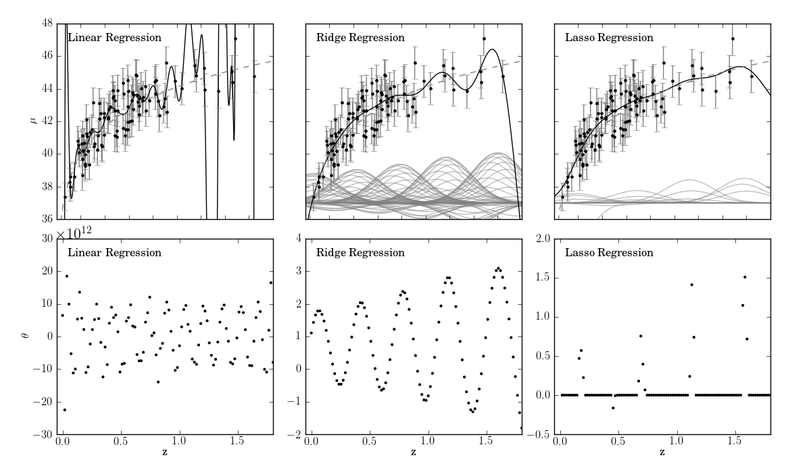

Regularized Regression Example¶
This performs regularized regression on a gaussian basis function model.
Objective did not converge, you might want to increase the number of iterations
# Author: Jake VanderPlas <vanderplas@astro.washington.edu>
# License: BSD
# The figure is an example from astroML: see http://astroML.github.com
import numpy as np
from matplotlib import pyplot as plt
from scipy.stats import lognorm
from sklearn.linear_model import LinearRegression, Ridge, Lasso
from astroML.cosmology import Cosmology
from astroML.datasets import generate_mu_z
from astroML.density_estimation import FunctionDistribution
#----------------------------------------------------------------------
# generate data
np.random.seed(0)
z_sample, mu_sample, dmu = generate_mu_z(100, random_state=0)
cosmo = Cosmology()
z = np.linspace(0.01, 2, 1000)
mu = np.asarray(map(cosmo.mu, z))
#------------------------------------------------------------
# Manually convert data to a gaussian basis
# note that we're ignoring errors here, for the sake of example.
def gaussian_basis(x, mu, sigma):
return np.exp(-0.5 * ((x - mu) / sigma) ** 2)
centers = np.linspace(0, 1.8, 100)
widths = 0.2
X = gaussian_basis(z_sample[:, np.newaxis], centers, widths)
#------------------------------------------------------------
# Set up the figure to plot the results
fig = plt.figure(figsize=(12, 7))
fig.subplots_adjust(left=0.07, right=0.95,
bottom=0.08, top=0.95,
hspace=0.1, wspace=0.15)
classifier = [LinearRegression, Ridge, Lasso]
kwargs = [dict(), dict(alpha=0.005), dict(alpha=0.001)]
labels = ['Linear Regression', 'Ridge Regression', 'Lasso Regression']
for i in range(3):
clf = classifier[i](fit_intercept=True, **kwargs[i])
clf.fit(X, mu_sample)
w = clf.coef_
fit = clf.predict(gaussian_basis(z[:, None], centers, widths))
# plot fit
ax = fig.add_subplot(231 + i)
ax.xaxis.set_major_formatter(plt.NullFormatter())
# plot curves for regularized fits
if i == 0:
ax.set_ylabel('$\mu$')
else:
ax.yaxis.set_major_formatter(plt.NullFormatter())
curves = 37 + w * gaussian_basis(z[:, np.newaxis], centers, widths)
curves = curves[:, abs(w) > 0.01]
ax.plot(z, curves,
c='gray', lw=1, alpha=0.5)
ax.plot(z, fit, '-k')
ax.plot(z, mu, '--', c='gray')
ax.errorbar(z_sample, mu_sample, dmu, fmt='.k', ecolor='gray', lw=1)
ax.set_xlim(0.001, 1.8)
ax.set_ylim(36, 48)
ax.text(0.05, 0.95, labels[i],
ha='left', va='top',
transform=ax.transAxes)
# plot weights
ax = plt.subplot(234 + i)
ax.xaxis.set_major_locator(plt.MultipleLocator(0.5))
ax.set_xlabel('z')
if i == 0:
ax.set_ylabel(r'$\theta$')
w *= 1E-12
ax.text(0, 1, r'$\rm \times 10^{12}$',
transform=ax.transAxes, fontsize=16)
ax.scatter(centers, w, s=9, lw=0, c='k')
ax.set_xlim(-0.05, 1.8)
if i == 1:
ax.set_ylim(-2, 4)
elif i == 2:
ax.set_ylim(-0.5, 2)
ax.text(0.05, 0.95, labels[i],
ha='left', va='top',
transform=ax.transAxes)
plt.show()